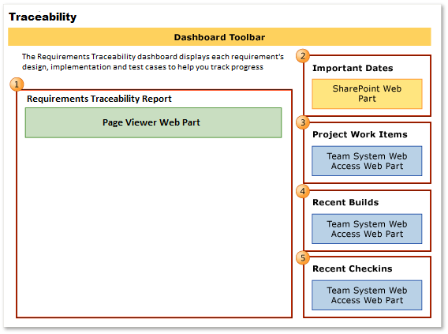
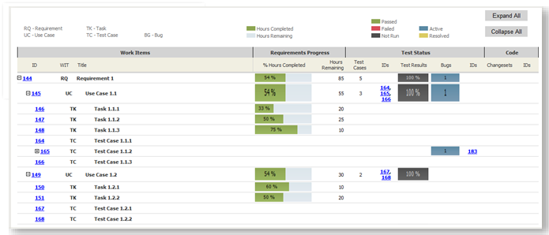

You can use the Traceability Dashboard to monitor each requirement's design, implementation and test to track progress toward completing an iteration or project.
|
|
|---|
|
You access dashboards through your team project portal. You can access the dashboard only if that portal has been enabled and is provisioned. For more information, see Dashboards (GovDev) or Access a Team Project Portal and Process Guidance. |
|
In this topic |
You can use this dashboard to answer the following questions :
|
Required Permissions
To view the dashboard, you must be assigned or belong to a group that has been assigned the Read permissions in SharePoint Products for the team project. To modify, copy, or customize a dashboard, you must be assigned or belong to a group that has been assigned the Members permissions in SharePoint Products for the team project. For more information, see Add Users to Team Projects.
To modify a report in Office Excel, you must be a member of the TfsWarehouseDataReaders security role in SQL Server Analysis Services. You must also be assigned or belong to a group that has been assigned the Members permissions in SharePoint Products for the team project. For more information, see Grant Access to the Databases of the Data Warehouse for Visual Studio ALM .
To view a work item, you must be a member of the Readers group or your View work items in this node permission must be set to Allow. To create or modify a work item, you must be a member of the Contributors group or your Edit work items in this node permission must be set to Allow . For more information, see Managing Permissions.
 Data
Displayed in the Dashboard
Data
Displayed in the Dashboard
You can use the Traceability dashboard to understand how much progress the team is making toward completing requirements, use cases, tasks, and tests. Specifically, this dashboard displays the Web parts that the following illustration shows and that the following table describes.
|
|
|---|
|
The Traceability report |
For more information about how to interpret, update, or customize the charts that appear in the Traceability dashboard, see the topics that are listed in the following table.
|
Web part |
Data displayed |
Related topic |
|---|---|---|
 |
A visual representation of the requirement's status and traceability through tasks, tests, bugs and code.  |
|
 |
List of upcoming events. The list is derived from a SharePoint Web part.  |
Not applicable |
 |
Count of active, resolved, and closed work items. You can open the list of work items by clicking each number. This list is derived from a Team Web Access Web part. 
|
|
 |
List of recent builds and their status. You can view more details about a specific build by clicking it. This list is derived from a Team Web Access Web part.  |
|
 |
List of the most recent check-ins. You can view more details about a specific check-in by clicking it. This list is derived from a Team Web Access Web part.  |
Required
Activities for Tracing and Tracking Progress
For the Requirements Traceability report that appears in the dashboard to be useful and accurate, the team must perform the following activities:
-
Define requirements, use cases, tasks, and test cases and link them using the constrained work item links.
-
Specify and update the Completed and Remaining fields for each task as the team works on it.
 Important
Important
If you subdivide a task into subtasks, specify hours only for the subtasks. These hours are rolled up as summary values for the parent task, use case and requirement.
-
Update the State of each requirement, use case, task, test case and bug as it progresses from Active to Closed.
-
(optional) Specify the Iteration and Area paths for each work item if you want to filter by those fields.
Tracking
an Iteration
By using the Traceability dashboard, product owners and the team can view the team's progress and determine whether the team is making enough progress, delivering value by closing requirements and use cases, and by implementing the iteration based on the iteration plan.
Modify the Requirements Traceability Report for an iteration
To track an iteration by using the Requirements Traceability dashboard, you must modify the Requirements Traceability report in Reporting Services to reflect the iteration of interest. Please see Requirements Traceability Report for more detils.